Welcome to "The!Cart Studio", the free cartridge image authoring tool
for
The!Cart
,
Atarimax
Maxflash Cartridges
and free-style binary cartridge images. The program enables you to
create workbooks for cartridge images which contain one or more ROMs
or executables. The workbook an then be exported in different
formats. Besides plain binary images for usage if an EPROM or
external flash programming device, emulator cartridge images to run
the cartridge in emulators and flash programming disk images which
can be booted or loaded directly from the Atari to flash the target
flash module. You need a device and software that is capable of
transferring the data from your PC to the Atari like for example
SIO2PC (available
here
and
here
) with
AspeQt
or
SIO2SD
. For "The!Cart", you do not need a USB programmer device or other PC
related hardware for programming. Because "The!Cart Studio" can also
create plain binary export files for a workbook, you can of course
also use an USB programmer device to burn or flash them into any kind
of cartridge supported by the device.
You can watch the
youtube
video presentation
get an idea how it works and looks like. To really learn about the
details and features you should carefully read this English manual.
If you have question regarding "The!Cart" or "The!Cart Studio", you
can contact me directly or post in the "The!Cart" thread on
AtariAge (English)
or in the
ABBUC Forum (German)
.
This is version ${version} of the program. Click
here
to download the latest version of the program. The download is a
single ".zip" archive file which contains the actual program plus
additional operating system specific wrapper files. Simply extract
the files from the archive into a folder of your choice.
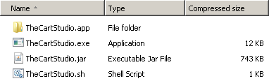
"The!Cart Studio" is implemented in Java which makes is compatible
with all popular operating systems. In order to run the program you
need has Java Runtime Environment (JRE) or Java Development Kit
(JDK/SDK) with version 1.6 or newer versions installed. Using Java
1.7 or newer is recommended because on the one hand Java 1.6 is out
of maintenance and on the other hand, multi-selection in the file
selection dialog will only work with Java 1.7 or newer versions.
"The!Cart Studio" requires enough RAM available for the Java process
to be able to export images. The amount of available RAM is display
in the "About" dialog. It should be twice the size of the cartridge
you want to export. So for a 128 MB "The!Cart" export, the program
requires at least 256 MB. You can specify this when you start from
the command line via "java -Xmx256M -jar TheCartStudio.jar". By
default "The!Cart Studio" check if an update is available during the
start. The check is performed in the background and has no impact on
the startup time. You can disable this check in the options.
Double-click "TheCartStudio.exe" to start the program. The
"TheCartStudio.jar" file with the actual program must be present in
the same folder. Alternatively you can run the program also from the
command prompt ("cmd.exe"). In this case you can change the current
path to the folder where "TheCartStudio.jar" is located and type
"java.exe -jar TheCartStudio.jar" to start the graphical user
internal. Alternatively the following parameters are supported when
running from the command line.
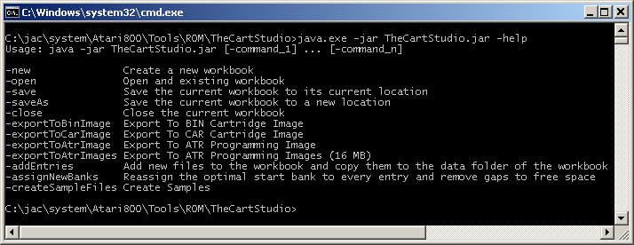
After extracting the "TheCartStudio.sh" and the "TheCartStudio.jar"
file from the download archive, the so called "executable bit" should
already be set. In case it is not, you will see the following error
message when you double-click one of the files.
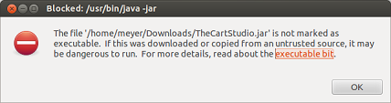
Open the file properties, set the executable flag as shown below
for both files.
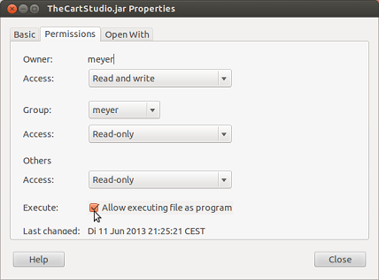
The installation of the Java runtime normally registers itself as the
default application for the file extension ".jar". So by simply
double-clicking the "TheCartStudio.jar" file or by choosing "Open"
from the context menu, the program should start. If that is not the
case or if you get error messages reporting that there is not enough
memory reserved for Java, you can double-lick the "TheCartStudio.sh"
instead which sets the -Xms and -Xmx parameters of Java as required.
Please note that there is a
known bug in Ubuntu
, for example 12.10 with openjdk7. It is tracked as "Unreadable menu
bar with Ambiance theme in Java/Swing GTK L&F" and causes the
menu to appear too dark; making is barely readable with the standard
desktop theme. Changing the desktop theme fixes this.
The folder "TheCartStudio.app" in the download is a native package
which contains a small Java stub, the "TheCartStudio.jar" and some
additional configuration files. You can start the app directly from
the Finder. It also sets the -Xms and -Xmx parameters of Java as
required to overcome the default of only 128MB heap space. Upon the
first start you will have to open the app directly from the Finder
via the "Open" entry in the context menu. Then you have to confirm
the "TheCartStudio is from an unidentified developer. Are you sure
you want to open it?" warning by pressing the "Open" button and
authenticating the action with an administrator user.
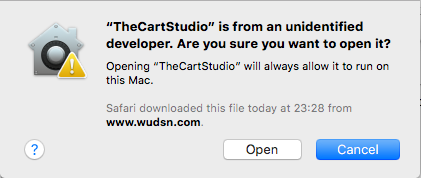
The "The!Cart" enables you to create workbooks for cartridge images
which contain one or more ROMs or executables. The workbook an then
be exported in different formats. Besides plain binary images
(".BIN", ".ROM") for usage if an EPROM or external flash programming
device, emulator cartridge images (".CAR") to run the cartridge in
emulators and flash programming images (".ATR") which can be booted
or loaded directly from the Atari to flash the target flash module.
Depending on the disk emulation you are using, you can export the
workbook a single large programming disk image for use with
AspeQt
or as multiple 16 MB sized programming disk images for use with
SIO2SD
,
SIO2USB
or similar SIO device emulators. You can also export cartridge images
in plain binary (".BIN") to burn or flash them to any kind of
cartridge using a programmer device.
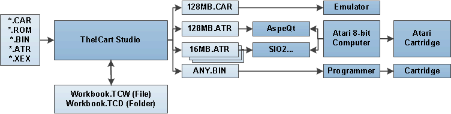
In case you are creating workbooks for "The!Cart", you can make use
of the native cartridge emulation feature and reuse the existing
software for "Atari Maxflash" cartridge and "MegaCart". This means
you can one the one hand directly use existing compilations and just
add them as a single file. On the other hand you can use
Maxflash
Studio
and
MegaCart Studio
to create new compilations and images for these cartridges and then
add them as a single file. Because the
Extended Menu
of "The!Cart" also recognizes the menu systems of these two cartridge
systems, it can optionally offer you the entries within these menus
directly.
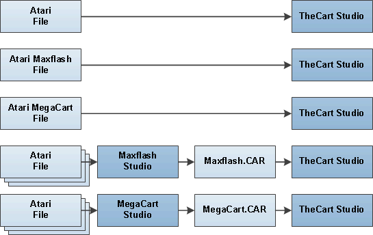
Using the different studios with their specific loaders can be useful
in particular when adding ATR disk images. It is in the nature or ROM
cartridges that no 100% emulation of standard disk handling is
possible. Any kind of ATR emulation must use at least a little amount
of the computer's RAM. And if a certain program uses this RAM area
while loading from the cartridge, the loader will be overwritten and
crash. The details on the different methods used can be found in the
section
ATR Disk Images
. The following table given an overview of the features supported by
the individual loaders. With this information you can decide which
loader might be the right one for you.
| Loader |
Method |
Compatible with Programs using the RAM under the OS |
Supports Disk Swapping |
Supports Poke and Patches |
| Maxflash Studio |
Modified Atari OS in RAM |
No |
Yes |
No |
| MegaCart Studio |
Modified Atari OS in RAM |
No |
Yes |
No |
| The!Cart Studio |
Modified ATR Disk Image |
Yes |
No (planned) |
Yes |
The user interface of "The!Cart Studio" is localized and current
comes with English and German screen texts. You can change the
display language via the menu entry "Tools/Options...". The default
value is "Automatic", which means that the language is determined
automatically based on the language settings of the operating system.

By default, only the most frequently used columns are display in
the various tables. You drag & drop to change the order of the
columns. Clicking on column header with SHIFT or CONTROL held down
extends the sort order by appending this column. This way you can
sort by genre first and then by title for example. Clicking a column
header without pressing SHIFT or CONTROL resets the sort order to
that single column. You can also use the context menu to hide visible
columns, unhide invisible columns and reset visibility and sort order
to the default. All layout changes are saved automatically when the
program is closed. This also applies to the size and the position of
the main window and to the different folders that were last used for
loading/saving workbooks, adding entries and exporting cartridge
images.
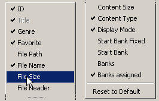
All relevant commands also have a key binding, so you can use your
keyboard to fully control the program.
In the "File" menu you can find the usual "New", "Open", Save", "Save
As" and "Close" actions. When "The!Cart Studio" is opened, a new
unnamed project is already prepared. You can display the dialog to
edit the workbook options via the menu entry "Edit/Workbook
Options...".
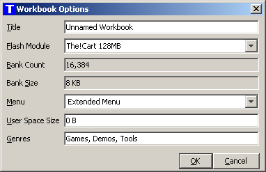
You can add files for new entries via the menu entry "Edit/Add
Entries...". The file chooser has multi-selection enabled, that means
you can select multiple files at once and add them in go.
Alternatively you can use drag & drop to drop one or multiple
files onto the window to add entries.
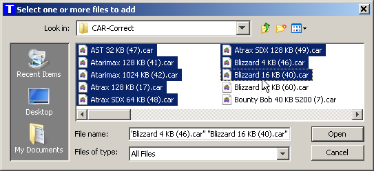
"The!Cart Studio" contains a database of popular ROMs and will
assign the correct title automatically based on size and the CRC32
checksum of the file. If no matching entry is found in the data, the
title of the entry is defaulted from the file name by removing the
file extension.
When new files are added, they remain at their original location
first. When you save the workbook, all newly added files will be
copied into the data folder (".tcd") of the workbook. This way you
have all files and the workbook together in one location. As a
consequence,
a file in the workbook is uniquely identified by its
case-insensitive file name, irrespective of the folder it was
originally copied from.
Adding files with the same file name will result in a confirmation
dialog where you can choose to overwrite the existing file in the
data folder with the new file, rename the file automatically during
copying or to skip the new file, leaving the existing file in the
data folder unchanged. The choice can either be applied to the
current file only or to the current file and all following files.
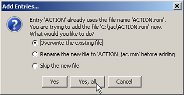
Entry Properties
The information for every entry is displayed in the columns of table
on the "Entries" tab". Only the most important columns are visible by
default. They are show with bold names on the table. You can
configure the visibility and order of the columns as described in the
section
General Usage
. Columns listed as editable can be read-only for certain entries
depending on the type of the entry or other conditions.
| Column |
Editable |
Description |
|
Line
|
No |
The line number in the table. |
| Type |
No |
The type of the entry. Possible values are:
-
File
This entry was added via the standard "Add Entries..." action by
selecting a file that is now part of the workbook. The entry and
content of the file will be exported when the workbook is
exported.
-
User Space
This entry was added via the "Add User Space Entry..." action by
selecting a file that is now part of the workbook. User space
entries can only be added if user space is reserved in the
workbook options. A user space entry is exported as menu entry
only and points to a bank in the User Space that is not
maintained from from "The!Cart Studio".
|
|
Title
|
Yes |
The title of the entry in the extended menu. It must be
specified and should unique within the workbook because it is the
basis for the search in the extended menu. The length of the title
is limited to 40 characters and to characters that actually exist
in the Atari's character set. The title is defaulted when the entry
is added based on built-in the cartridge database. If no entry can
be found in the database, the title is defaulted based on the name
of the newly added file.
|
|
Genre
|
Yes |
The genre of the entry. Genres like "Games", "Demos" or "Tools"
can be defined in the workbook options. Every entry can optionally
be assigned to a genre. There are three ways to do this. First by
typing in the name of the genre with the keyboard. Second by
choosing the genre from the drop down list of the field. Third by
the action "Set Genre..." in the "Edit" menu. Using the "Set
Genre..." action, you can set or clear the genre for all selected
entries at once. If an entry not assigned to a genre, is will only
be present on the "All" tab of the extended menu. If a type is
assigned to a genre, it will be present on the "All" tab and on the
tab for the genre.
|
|
Favorite
|
Yes |
If you set the favorite indicator for an entry, the initial list
of entries in the extended menu only shows the favorites for the
active genre. This way you can use the joystick or cursor keys to
select from restricted list of entries. As soon as you start typing
a search term, the favorite indicator becomes irrelevant and all
entries are searched foe the search term.
|
| File Path |
No |
The source file path for newly added and not yet saved entries.
Once the workbook is saved, the file will be copied from the source
file path into the data folder of the workbook and the file path
will be cleared.
|
|
File Name
|
No |
The file name of the entry that uniquely identifies the entry
within the wookbook and the data folder of the workbook.
|
| File Size |
No |
The exact file size of the file in bytes. |
| File Header |
No |
The file header type of the file. Possible values are:
-
None
The file does not have a specific file header that describes its
content. The complete file content is considered as relevant data
for "The!Cart". You have to select the proper content type
manually.
-
Cartridge
The file is a ".CAR" file that contains an additional header that
describes is content. Only the part of the file after the header
is considered as relevant for "The!Cart". The content type of the
entry is set automatically and cannot be changed manually.
|
| Content Size |
No |
The size of the relevant content in the file. For files with
header type "None", it is equal to the file size. For files with
another header type, it is the file size minus the size of the
header.
|
| Content CRC32 |
No |
The CRC32 checksum of the content. This checksum is used as
identification to find information in the cartridge database. You
will sometime also find this checksum when people try to identify
which ROM or version of a ROM they have.
|
|
Content Type
|
Yes |
The content type of the entry. The content type controls how
"The!Cart" and the extended menu interpret the binary content
behind the entry. To start an entry correctly, the correct content
type must be set. If you add entries with a "Cartridge" file
header, the content type is determined automatically and cannot be
changed manually. If you add a plain binary file, "The!Cart Studio"
will default the content type is possible based on the size of the
file. If there is more than one content type that matches the file
size, you have to select the correct one from the drop down list of
the field. You can see the available content types and the
associated file size in the "Content Types Overview" dialog. The
dialog can be opened via the "Help/Content Types" menu.
|
|
Display Mode
|
Yes |
The display mode for the entry. Possible values are:
-
Single Entry
The entry is represented as single entry in the extended menu.
The entry title in the workbook is used as entry title in the
extended menu.
-
Multiple Entries
This value can only be selected if the file behind the entry
contains an own menu that is supported by "The!Cart Studio". The
inner menu entries are extracted from the file during the export
of the workbook. Only the titles of the inner menu entry, but not
the title of the workbook entry, will appear in the extended
menu.
|
| Parameters |
Yes |
The parameters are relevant for entries with content type "ATR -
Atari Disk Images". They contain the information required for
modify the disk image content, so it can run from "The!Cart"
instead of running from a disk drive. When you add a entry based on
a disk image, the default parameters are automatically determined
by "The!Cart Studio". You can change them manually in case the disk
images does not work correctly with the defaults. To restore the
defaults, add the disk image file again. For more information on
the parameters see
File Format and Content Type
.
|
| Start Bank Fixed |
Yes |
By default "The!Cart Studio" arranges the data for the entries
of a workbook automatically. This is done based on a strategy that
keeps the position of existing entries stable as long as there is
enough free space. Together with the incremental flashing feature
of the flashing software, this helps keeping the time required for
updating "The!Cart" short. If you are a developer that creates
software specifically for "The!Cart" or you even create other
arbitrary binary exports with "The!Cart Studio", you may want to
have control of the order and position of the entry data in the
export. By setting the "Start Bank Fixed" checkbox, the
corresponding field in the "Start Bank" becomes editable. "The!Cart
Studio" will then used the specified start bank for the entry and
will not rearrange the entry is space on the cartridge runs out.
|
| Start Bank |
Yes |
The bank where the content for the entry is located. By default
the start bank is determined and managed automatically by The!Cart.
By setting the "Start Bank Fixed" checkbox, you make make this
field editable and specify a fixed value manually.
|
| Banks |
No |
The number of banks the entry will occupy on the cartridge. |
|
Bank Assigned
|
No |
This checkbox indicates the required banks for the entry could
be assigned correctly. If there is not enough continuous space for
the banks of the entry left on the cartridge, the "Banks Assigned"
checkbox will not be set. Saving the workbook is possible in this
case, but exporting the workbook is disabled. You can use the menu
"Edit/Reassign Banks" to trigger a reordering of all entries to
minimize gaps and free more space.
|
Several file formats are supported when adding entries. In order to
properly handle the ROM specific bank switching scheme, every entry
must know its content type. For those file formats where the content
type cannot be determined automatically, for example because there
are multiple possible options, you have to select it in the "Content
Type" column. The value help in the "Content Type" column is
automatically filtered based on the file length and content. So it
only offers the potentially matching content types. In additional
some file formats even automatically converted before they are added
to the workbook. Saving the workbook is possible at any time, even if
there are entries with unknown content type. Only when the workbook
is exported, the content type for all entries must be present. Here
is a description of the supported file formats and their handling.
| File Format |
Description |
| CAR Cartridge Image |
This is the recommended format to add ROM files. It is also by
emulators. It contains a header with the exact type of the ROM file
and a check sum to verify its integrity. This enables emulators to
run the file without prompting the user for the exact content type
upon each start. Similarly it enables "The!Cart Studio" to
automatically determine the content type, so you don't have to
choose something and the content type is not editable in this case.
|
BIN Cartridge Image
ROM Cartridge Image
|
This is the regular dump format for ROM file. It does no contain
any information on the type of flash module was dumped from and the
require bank switching to run it. Based on the size of the file,
the "Content Type" column is restricted to those values that
represent ROM of with the exact size of the file. For example a
file with exactly 1 MB of data could be "Atarimax 1MB", "Mega Cart
1MB", "XEGS 1MB" or "Switchable XEGS 1MB". If you want to use your
ROM files also in an emulator, it is advisable to convert the plain
ROM file into a ".CAR" file. All popular emulators have this
function built in. This way you don't have to choose the correct
flash module type on every start.
|
| ATR Programming Images
|
Collections created with the
Maxflash Studio
are sometimes available as "ATR Programming Images" instead of
"BIN" or "ROM" cartridge images. They are bootable disk images
which contain the program to flash the "Atarimax Maxflash"
cartridge directly from the Atari. They cannot be run or tested in
an emulator. These programming images are recognized by "The!Cart
Studio". When you add such a file as entry, it is first converted
into a ".CAR" cartridge image which is saved in the folder of the
programming image. In case the ".CAR" file already exists in that
folder, it will be overwritten. The new ".CAR" file is added to the
workbook. This way you can even run and test the content of the
".CAR" cartridge image in an emulator before flashing.
|
|
ATR Disk Images
|
This is the standard Atari disk image format used in emulators.
Many disk based programs that are available in this format can also
be started from flash cartridges. But there are some natural
limitations arising from the fact that loading the ATR images
requires a simulation of the SIO routines that are located in ROM
of the original Atari OS. For example the code for the simulation
must be located in the RAM and may be overwritten when the loading
from the ATR disk image starts. In addition the banks of the flash
cartridge have to be activated during the SIO operation to load the
data of the ATR disk image. As a consequence a program that uses a
display list, graphics or interrupts in the cartridge memory area
will run into problems. Also programs that try to write data to the
disk will fail when run from an ATR simulation. For the simulation
itself two approaches are used,
Modified ATR Disk Images
and
Modified Atari OS in RAM
. It depends on the individual ATR disk image and its programs
which of them will work best.
Modified ATR Images
This is the approach used by the "Extended Menu" of "The!Cart".
When you add an ATR file directly to a workbook, the file is
analyzed and all potential code locations that call the Atari OS
SIO routines are identified. For disks that contain a known DOS
(DOS 2.0S, DOS 2.5, MyDOS) and its "DOS.SYS" file, only the
sectors that belong to that file are patched by default. For disks
that contain the
Bootmanager by Mike Langer
, only the sectors of the Bootmanager are patched. For all other
disks, the complete disk is scanned for usages of the SIO and that
may potentially result in some false positives you have to removed
manually from the parameters. The result of this analysis is
stored in the "Parameters" column in the form "base=$100,
$123=SIOV, $456=DSKINV". This column is hidden by default and can
be made visible via the context menu of the table. When the
workbook is exported for to the Atari, the calls at the found
offsets are modified to point to the SIO simulation which as
located at the address specified with the "base=$...." parameter.
The advantage of this approach is that it works also on Atari 400
an Atari 800 machines that do not have RAM under the OS and for
software that uses the RAM under the OS like for example "Turbo
Basic XL 1.5" or "The Brundles". And by specifying the
corresponding parameters it will work even for software that uses
nonstandard SIO routines instead of the Atari OS SIO routines like
for example "MyPicoDOS". The disadvantage of this approach is that
it will not work with program where the code that calls the SIO
vectors is packed or encrypted in the ATR disk image. The
following parameters are supported. Numbers are given in
hexadecimal notation and are just example values. In the appendix
Compatibility Patches
you can find a list of known parameter combinations for programs
that don't work with the default parameters.
-
base=$100
This specified the base address for the SIO simulation code which
is less than 256 bytes in size. The default base address is $400.
If the ATR disk image crashes while loading, it might be the case
that the program overwrites this memory area. For example
MyPicoDOS uses the memory location $400-$40f during loading. To
solve this problem you can change the base address to $410 for
example. Other good choices for base addresses are $100, $400,
$480,$500,$600 and $100. Just try which one works for the
specific program.
-
$123=SIOV
The two bytes starting at offset $123 are changed to the start
address of emulation code for the SIOV vector ($e459).
-
$123=<SIOV
The byte at offset $123 is changed to the low byte of start
address of emulation code for the SIOV vector ($e459).
-
$123=>SIOV
The byte at offset $123 is changed to the high byte of start
address of emulation code for the SIOV vector ($e459).
-
$123=DSKINV
The two bytes starting at offset $123 are changed to the start
address of emulation code for the DSKINV vector ($e453).
-
$123=<DSKINV
The byte at offset $123 is changed to the low byte of start
address of emulation code for the DSKINV vector ($e453).
-
$123=>DSKINV
The byte at offset $123 is changed to the high byte of start
address of emulation code for the DSKINV vector ($e453).
-
$123=SELECTEDITEMNUMBER
The two bytes at offset $123 is changed to memory location which
contains the item number of the selected menu entry. This can be
used to modify inner menus to skip the selection and start the
selected entry automatically. The item numbers are counted
starting at zero. For example if you select the a menu entry
which represents the 3rd item on a disk based ATR disk image, the
values in the memory location will be "2".
If you messed up the parameters somehow, you can simply add the
ATR disk image again to the workbook and choose to overwrite the
existing file in the workbook. In this case, the analysis is
performed again and a default for the parameters is generated.
The SIO simulation in this approach supports both the read ("R",
$52) and the status ("S", $53) command for "D1:". The status
command set the 3 density bits of the "DVSTAT" status based on the
density and size of the ATR disk image. Using other disk units
than "D1:" results in the error code "130 - Nonexistent Device".
Using commands than "R" and "S" results in the error code "132 -
Unknown command".
Modified Atari OS in RAM
This is the approach used by the "Atarimax Maxflash" Menu or
"MegaCart" Menu. The operating system is copied to the RAM under
the OS ROM and is then modified to load the "disk sectors" from
the flash cartridge instead of the real disk. The advantage of
this approach is that it works equally for all software that uses
the standard Atari OS SIO vectors, even if the SIO relevant code
on the ATR disk image is packed on encrypted. The disadvantage is
that the approach will not work on machines like the Atari 400 or
Atari 800 that do not have RAM under the OS like the Atari and not
with programs that use the RAM under the OS themselves. You can
use the
Maxflash Studio
or
MegaCart Studio
to create 128 KB, 1 MB or 2 MB collections with ATR disk images.
Both studios come with proven emulation and provide several
options to specify how the disk image shall be handled. You can
then export the collection as BIN or CAR cartridge image and add
it to the workbook.
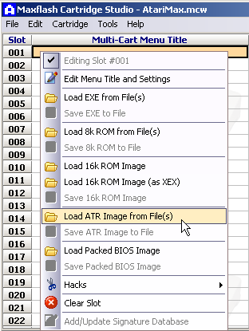
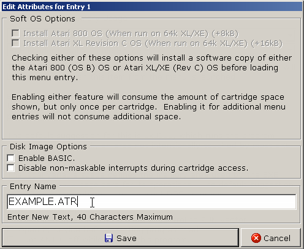
|
COM Executable
EXE Executable
XEX Executable
|
This is the Atari DOS composite file format of executable files
that can be loaded from a DOS. They can be added to "The!Cart" in
three ways. All of them have advantages and disadvangates.
Directly as single file
Executable files (COM,EXE,XEX) can be added directly to the
workbook. While adding files directly is very convenient, the
worst case waste of space is 8191 bytes per file. Therefore it is
recommended to use the below mentioned options instead, if you add
many executable files.
Included with multiple files on an ATR disk image
The most compatible and most space efficient way to run these
files is to copy them together with the required DOS onto an disk.
For execuable files which load additional data like fonts from
separate files, it is even the only valid way. And while adding
executable files directly in the workbook is possible, adding them
onto an ATR disk image with the
Bootmanager by Mike Langer
first, and then adding the ATR disk image has advantages. You can
create ATR disk images which represent compilations and also work
on real disk drives. In addition, ATR disk images work with
sectors of 128 or 256 bytes. So if multiple file are copied to one
disk, at most 127 or 255 bytes of space are wasted per file on a
full disk. The
HomeSoft web site
contains many disk images which are already prepared with the
Bootmanager by Mike Langer
.
Included with multiple files on an "Atarimax Maxflash" or
"MegaCart" cartridge
This is similar to including files on an ATR disk images. Instead
of using DOS and a Bootmanager, you can use the
Maxflash Studio
or
MegaCart Studio
to create 128 KB, 1 MB or 2 MB collections with COM/EXE/XEX
executables. Both studios come with proven emulation and provide
several options to specify, how the executable shall be handled.
You can then export the collection as BIN or CAR cartridge image
and add that to the workbook.
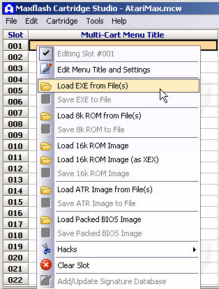
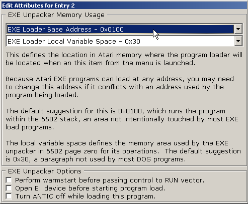
|
The title and content type of many popular ROMs is also stored in
the cartridge database. If you ROM is found in the database, the
title and if known the content type are proposed. If no matching
entry is found, the content type is set to "Unknown" and you have to
select the appropriate content type manually before exporting the
cartridge in and form.
The cartridge database is based on the list maintained by Tomasz
Krasuski (Kr0tki) at
AtariAge
. It currently contains over 700 known titles and almost 700 known
content types. The exact number are shown on the about dialog. You
can support "The!Cart Studio" and improve the quality of the
cartridge database by sending your own workbook file without (!) the
ROMs to
.
Via the column "Display Mode" you can select how the entry is
represented in the extended menu. Possible values are:
-
Single Entry
The entry is represented as single entry in the extended menu. The
entry title in the workbook is used as entry title in the extended
menu.
-
Multiple Entries
This value can only be selected if the file behind the entry
contains an own inner menu that is supported by "The!Cart Studio".
The inner menu entries are extracted from the file during the export
of the workbook. Only the titles of the inner menu entry, but not
the title of the workbook entry, will appear in the extended menu.
The following types and versions of inner menus are currently
supported. For all of them, you can add the inner menu entries to the
extended menu by choosing "Multiple Entries". When you add an entry
to the workbook, the "Display Mode" will be set to "Multiple Entries"
automatically by default. You can of course change the values if you
don't want the inner menu entries to show up separately. By default
you will start the inner menu when you select one of its entries in
the extended menu. For some inner menus dedicated support has be
implemented so selecting the inner menu entry even starts it
directly.
| File Type |
Menu |
Description |
| ROM Image |
Maxflash Studio |
Multiple entries is supported for a very large number of versions
of
Atari Maxflash Studio
. Direct start is supported for the menus created witd the latest
version of Maxflash Studio.
|
| ROM Image |
MegaCart Studio Menu |
Multiple entries is supported for all official versions of
MegaCart Studio
. Direct start is supported for the menus created with the latest
version of MegaCart Studio.
|
| Disk Image |
Bootmanager by Mike Langer |
Multiple entries is supported for the 1996 version of the
Bootmanager by Mike Langer
, which is the only known version. Direct start is not supported.
You can find the huge archive of disk images that use the
Bootmanager on the
HomeSoft web site
.
|
| Disk Image |
MyPicoDOS Menu by Matthias Reichl (hias) |
Multiple entries is supported if there is a "PICONAME.TXT"
configuration file on the disk. Direct start is not supported.
|
The menu entry "Tools/Preview" allows for a testing preview of the
complete cartridge export and its menu in an emulator. For the
preview, the workbook is exported as ".CAR" file with a fixed name
into the temporary folder of the user. A previously existing preview
is overwritten automatically. If no path to an emulator executable is
configured in the options, "The!Cart Studio" tries to open the ".CAR"
file with the associated default program of the operating system. If
that fails, it will ask you to maintain the full path to the
emulator, for example to "Altirra.exe" or "atari800.exe", in the
options.
| Export Format |
Description |
Supported Flash Types |
| BIN Cartridge Image |
Single plain binary cartridge file without header information
with exactly the size specified by the flash type. Can be used
directly to burn or flash the cartridge file to a physical
cartridge with an arbitrary eprommer or flasher. You can also run
the cartridge file in an emulator like Atari800, Atari800Win or
Altirra. The emulator will try to detect the cartridge type from
the ROM size and content. In case of doubt the emulator will prompt
you for the correct cartridge type every time you open they
cartridge file. Therefore using the "CAR Cartridge Image" export
instead in recommended in this case.
|
AtariMax 128k
AtariMax 1MB
The!Cart 128MB
User Defined
|
| CAR Cartridge Image |
Single extended binary cartridge file with header information.
Can be used directly run the cartridge file in an emulator like
Atari800, Atari800Win or Altirra. The emulator will detect the
cartridge type directly from the header, so you don't have to
select in when opening the cartridge file.
|
AtariMax 128k
AtariMax 1MB
The!Cart 128MB
User Defined
|
| ATR Programming Image for
AspeQt
|
Single disk image in ATR format for use with AspeQt and the
"The!Cart" flasher software on the Atari. The ATR file uses large
sectors to achieve the maximum transmission speed and to store up
to about 512 MB of information (65534 sectors of 8k size) in a
single file. The file contains additional information to support
incremental flashing to speed up flashing in case only parts of the
project have been changed. In addition the file only contains the
used sectors. Therefore this export format can also be used to
program "The!Cart" cartridges of a size smaller than specified by
the flash type, as long as the size does not exceed the physical
size of the cartridge.
|
The!Cart 128MB
User Defined
|
| ATR Programming Images (16
MB)
|
Multiple disk image in ATR format for use with SIO2USB, SIO2SD,
SIO2PC or
AspeQt
and the "The!Cart" flasher software on the Atari. The ATR files
uses normal double density sectors to be compatible with SIO2USB,
SIO2SD and Atari DOS versions like MyDOS and SpartaDOS. The files
contains additional information to support incremental flashing to
speed up flashing in case only parts of the project have been
changed. In addition the files only contain the used sectors.
Therefore this export format can also be used to program "The!Cart"
cartridges of a size smaller than specified by the flash type, as
long as the size does not exceed the physical size of the
cartridge.
|
The!Cart 128MB
User Defined
|
The export always also generates a ".txt" index file with the title
and origin of all menu entries. This way you can use the file system
search of your operating system function to find games in exports.
The index file also contains the information the for example
"Amaurote 128 (130 XE)" is one of the menu entry that stees from the
"Multiple Entries" setting for the workbook entry with the title
"GAMES403" stored in "GAMES403.ATR"."
You can print the content of the workbook including the list of
entries via the menu entry "File/Print" (CTRL-P). The columns in the
print output are the visible columns on the entries tab. Hence you
can configure the columns you want to see as described in the section
General Usage
. For example you can make the column with the start bank visible, so
you can use the simple menu to start entries and see the banks which
are assigned to user space entries.
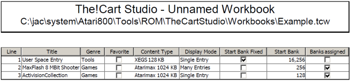
The!Cart
- Plug "The!Cart" in and power on your Atari.
- Press "ESC" to leave the extended menu and enter the simple menu
with the black text screen.
- Press "F" to select the built-in flasher and then "RETURN" to
start it.
- The flasher will automatically detect if the attached storage
device supports high-speed SIO.
- Press "1" for "Program Cartridge".
-
If you use AspeQt and SIO2PC, insert the single large disk image
created in the step
Exporting Workbooks
into the emulated drive "D1:" in AspeQt.
-
If you use SIO2USB, SIO2SD or your alternative storage device,
insert the the first of the nine 16 MB disk images created in the
step
Exporting Workbooks
into the emulated drive "D1:" in AspeQt. If your storage device
supports emulating multiple drives, you can insert the disk images
2..9 already in the subsequent virtual drives. This way you can
leave the Atari along for a longer time during flashing.
- The flasher will prompt you with "drive number (1-15)"
- Press "1" and "RETURN" to start loading the data from disk.
- The flasher will load the header information and display the
workbook title, date and number of used blocks. It will display if
the export consists of multiple 16 MB images. In that case you can
choose to search for further 16 MB disk images in all available
drives.
- The flasher will prompt you with "perform incremental update
(y/n)?"
- Press "y" to use incremental update.
- The flasher will prompt you with "start programming (y/n)?"
- Press "y" to start the actual flashing.
- The flasher will load the check sums, determine which differences
exist between the current content of "The!Cart" and the content of
the exported workbook. Only blocks that are different are loaded and
updated.
- When done with programming, the flasher will prompt you with
"Press any key to continue"
- Press "S" to start the cartridge.
- The flasher will prompt you with "Start Cartridge: 'E' for expert
menu (y/e/n)?"
- Press "y" to start enter the updated extended menu.
Important: If The!Cart does not start anymore after flashing
In very rare cases, for example when I/O errors corrupt the first few
banks of The!Cart, you may not be able to enter the menus or the
built-in flasher anymore from The!Cart itself. Then you have the
following options:
-
Download latest disk version of the flasher from
Atari
flashing software
.
- Insert the "thecart.atr" from the download archive in disk drive
1.
- Hold down the OPTION key during power-on. You will then either
end up in the simple menu and can try to update from there. If
there is no extended menu on the cartridge, the cartridge disables
itself completely and the computer will boot from disk.
- If even holding down OPTION does not disable The!Cart, hold down
the SELECT key instead during power-on. The cartridge disables
itself completely and the computer will boot from disk.
- If even this does not disable The!Cart, you need a Turbo-Freezer
or similar monitor program, so you can disable The!Cart during
power-on by writing the value $00 to address $D5A6. If you have a
Turbo-Freezer, hold down the freezer button and power-on the
computer. Enter the debugger by pressing "D" and enter "CD5A6<00".
Then press RESET to let the computer boot.
-
If all this fails, you can try
the strictly not recommended way
and hot-plug The!Cart. This may damage your cartridge and you
computer. First boot the flash from disk without The!Cart inserted.
You are prompted to press the RESET button on The!Cart. Insert the
cartridge carefully and completely. Press the RESET button on the
cartridge and then press RETURN on the computer. The flasher will
report if and which cartridge was detected.
- You can flash the cartridge as described in the previous
section. If the problem remains, try flashing again and answer the
question "incremental update" with "n".
- Now your The!Cart works again. If not, feel free to contacts us.
Pressing the RESET button on the "The!Cart" cartridge followed by
pressing the RESET button on your Atari will take you to the menu. If
the cartridge contains the extended menu, holding OPTION while
pressing RESET on the Atari starts the simple menu. This allows for
starting the built-in flasher and update the extended menu in case it
does not work properly. Holding SELECT while pressing RESET on the
Atari disables the cartridge completely. This allowes for starting
booting the flasher from a disk drive.
You can use the joystick or the keyboard to control the extended
menu. You can narrow list by selecting the tab of a genre. The tab
"All" always contains all entries. You can narrow down the list
within a genre tab by typing any word or part of the title of the
entry you are looking for. The search will find the entry no matter
if something is in lower case or upper case. You can also use the
joystick and the cursor keys to scroll though the result list. You
can use the following controls:
- HELP / ATARI - Display the help menu
- DELETE - Delete the last character from the search term.
- Joystick UP, cursor UP or "-" - Move the cursor line up.
- Joystick DOWN, cursor DOWN or "=" - Move the cursor line down.
- FIRE or RETURN - Start the selected entry. Lock the the
cartridge configuration to prevent changes.
- FIRE+SHIFT or RETURN+SHIFT - Start the selected entry. Don't
lock the the cartridge configuration.
- RETURN+CONTROL - Start the selected entry's cartridge menu, if
there is one. Lock the the cartridge configuration to prevent
changes.
- RETURN+SHIFT+CONTROL - Start the selected entry's cartridge
menu, if there is one. Don't lock the the cartridge configuration.
- Joystick LEFT, cursor LEFT - Select next genre to the left
- Joystick RIGHT, cursor RIGHT - Select next genre to the right
- TAB - Toggle the details display mode of the selected entry
between readable and technical information
- ESC - Exit the extended menu and start the simple menu. From
there the flash can be started also.
The most recent version of the CPLD logic for the "The!Cart"
cartridge supports a configuration lock. The configuration lock
ensures no software can unintentionally or maliciously change the
contents of the "The!Cart" cartridge. If you have an early version of
"The!Cart" cartridge, you can use a JTAG interface to
update the CPLD logic
. By default the configuration of "The!Cart" is locked when an entry
is started. This means the configuration cannot be changed via
software anymore until you press RESET button on the "The!Cart"
cartridge. By pressing the "SHIFT" key as additional modifier when
starting an entry, you can prevent the configuration lock. This can
be useful when using software that is built to access the "The!Cart"
cartridge in native mode, for example RAM disk drivers.
A number of advanced features of "The!Cart Studio" that are not so
interesting for the regular user are also available.
-
Displaying additional columns in the entries tab
By default only the most frequently used columns are visible on the
entries tab. Using the context menu on the header row of table , you
can make more columns information about the entry visible.
-
Using fixed start banks
By default entries are assigned automatically to a suitable start
bank and the user cannot change this assignment. For developers who
want to create software that uses "The!Cart" directly, for example
in "Flexi-Mode" to directly access the 128 MB, it may be required to
put certain content in certain banks. To do this, use the context
menu to make the column "Start Bank Fixed" visible". This column
offers a check box and if the check box is active for an entry, the
column "Start Bank" becomes editable for this entry and the entry is
excluded from automatic bank assignment.
-
Defining User Space
By default all banks of the flash cartridge are under control of
"The!Cart Studio". But if you want, you can reserve a portion of the
flash cartridge for direct flashing from the Atari. This portion of
the flash cartridge is called "User Space". You can define the size
of the user space in the workbook options. You can enter the size in
bytes, kilo bytes or mega bytes, e.g. "1023 B", "8 KB" or "2 MB".
The effective size of the user space rounded to the next full bank,
depending on the bank size. In addition the size of user space
automatically rounded to a multiple of the flash block size, i.e. to
64 KB for the flash target types "Atarimax 128 KB/ 1 MB" and "Flash
MegaCart 4 MB" and to 128 KB for "The!Cart 128 MB". The use space is
always located in the last banks of the flash cartridge. This way
the ATR programming images are shorter and the flash software does
not overwrite the banks that belong to the user space.
Though the content of the user space is fully under control of the
Atari you can still define entries with "The!Cart Studio" to start
the content in the user space from the cartridge menu. Via the menu
entry "Edit/Add User Space Entry" a new user space entry is added to
the list. This type of entries does not have an associated file in
the project. Instead it is mandatory to specify the content type and
the start bank manually. Therefore these two columns become visible
if a user space entry is added.
-
Using a special version of the "The!Cart" Atari flashing software
and standard menu
By default "The!Cart Studio" uses the Atari flashing software and
standard menu that is included in the ".jar" file. In case you want
to use a more recent or modified version of the
"The!Cart"
Atari flashing software and standard menu
instead of the version which is currently included in "The!Cart
Studio", you can put the "cartmenu.rom" file in the same folder as
the "TheCartStudio.jar". Whether the built-in or the external
software is used and which version it has is displayed in the
"About" dialog.
In case of problems, just post your question to the forums
mentioned at the beginning of this document. Frequent mistakes are
-
You have used the wrong flash module type and size in the workbook
options
Make sure you set the flash module type and size to the actual type
and size of your cartridge. This is esp. important if you did not
create the workbook yourself but download it from somewhere. Other
people may have other hardware then you.
-
Yout have used the wrong menu in the workbook options
Make sure you set the flash module type to "Extended Menu" to get
the Google-like search. This is esp. important if you did not create
the workbook yourself but download it from somewhere. Older
workbooks use the "Simple Menu".
-
You have use the wrong flashing mode in the flasher
Make sure you use "Program Cartridge" by default. Programming raw
files or images is not required when using "The!Cart Studio". Make
sure you use incremental flashing by default if it is available to
save time. Non-incremental/full flashing is only required is nothing
else helps. In non-incremental mode, all blocks (16 banks are 1
block) of "The!Cart" are are explicitly erased to initialize the
flash, even though the banks may have been empty already.
-
You have used the "E) Erase cartridge" option in flasher
This completely erases all content in the Flash ROM, including the
menu and the flasher. The empty cartrige will lock up the computer
during the boot process. See section "If The!Cart does not start
anymore after flashing" for the required steps. The first flash
process will again erase all blocks (16 banks are 1 block) to
initialize the flash, even though the banks may have been empty
already.
For testing if your cartridge and the flasher work correctly, a
number of test workbooks are available for
download here
. In case the computer does not even start with the cartridge
inserted, you can try holding down the OPTION key during power-on to
bypass the cartridge. The load the flasher program from disk instead
and flash the cartridge again.
This is a list of patches for programs that don't work out of the
box with newer or non-standard Operating Systems or with the ATR
loader of The!Cart. For them you can adapt the default parameters
determined by "The!Cart" Studio. Just enter the solution listed in
the "Parameters" column of the respective workbook entry the to patch
the files during the export. Since the offsets specified here are
specific for a given disk image, they may not work on other disk
images.
| Program |
File |
Issue |
Solution |
| Amaurote 128 (130 XE) |
GAME403.ATR |
Uses the memory starting at $480 during loading, hence
overwriting the ATR loader if it uses that area.
|
base=$0500, $011d=siov |
| Bandits |
Bandits (1982)(Sirius Software)[OS-B].atr |
Uses an indirect jump to the disk SIO vector to hide where it
takes place. This requires an addition patch location $119D1 to be
added manually.
|
base=$500, $45=dskinv, $1617=dskinv, $208f=dskinv, $5326=dskinv,
$0105c9=dskinv, $01065e=dskinv, $119D1=dskinv
|
| Bounty Bob Str. Back! |
GAME049.ATR |
Uses the wrong PORTB value $8f when activating the OS ROM,
causing extended RAM to become active in extended machines. The
data from the empty extended RAM is copied under the OS and when
pressing RESET, the empty data is copied over the actual program.
Though the program seem to start correctly, it'll break later.
|
base=$0400, $011d=siov, $122ed=$ff, $12318=$fe |
| M.U.L.E. |
GAMES067.ATR |
The crack intro uses the normally unused stack area starting at
$114 and page 4 starting at $400. Therefore the base address for
the ATR loader must be place at a different address.
|
base=$0600, $011d=siov, $016a01=$ae,
$016a02=selected_item_number, $016a04=$4c, $016a05=$8b, $016a06=$09
|
| Popeye |
GAME009.ATR |
Uses and illegal entry point to OS-B, so it doesn't work on a
standard Atari XL.
|
base=$0400, $011d=siov, $1101a=$ea, $1101b=$ea, $1101c=$ea |
2020-05-21
- Fix ArayIndexOutOfBoundException when adding and ATR disk image
which has a partial match for DISKINV/SIOV at the end of the file.
- Fix XEX detection for files where the last segment is a single
byte.
- Improve message I425: Export the '{0}' project of this ROM using
the latest program version of '{0}' and import the ROM into this
workbook again. Then you can start these entries directly.
2020-01-01
- The long pending feature to mark entries as favorites is now
working. If you set the favorite indicator for an entry, the
initial list of entries in the extended menu only shows the
favorites for the active genre. This way you can use the joystick
or cursor keys to select from restricted list of entries. As soon
as you start typing a search term, the favorite indicator becomes
irrelevant and all entries are searched foe the search term.
- The search which was broken in the version 2019-12-24 is working
again.
- The XEX loader now also handles files without RUNAD segment and
file where the RUNAD segment is not the last segement correctly.
- The XEX loader now clears the cold start flag (COLDST, $244),
like DOS would. This way programs that perform the start via
changing the DOS vectors and jumping to a warm start can start
correctly.
- The wait cursor is now also displayed while saving the files
created via "File / Export" to indicate the program is still busy.
2019-12-24
- The tabbed display for the genres now only scrolls, if the
select genre does not fit on the screen. This is what you'd expect
from a tabbed visualization.
- The XEX loader now sets the BOOT? flag to $01, like a DOS would.
This fixes problems with programs that rely on the XEX being loaded
from a disk.
2019-11-26
- Columns "Title", "Genre", "File Path" and "File Name" are now
sorted case-insensitively.
- Fixed file exception when adding "Goonies.atr",
"ElektraGlide.atr", "Rampage.atr" and other ATR files.
2019-11-04
- Content type "Executable File" is now set automatically when
executables files (COM,EXE,XEX) with a valid file structure are
added.
- New content type "SAP Music File" has been added and is set
automatically when Slight Atari Player files (SAP) with a valid
file structure are added. These files will be supported directly by
the menu in future.
2019-10-28
- Executable files (COM,EXE,XEX) can now be added directly to the
workbook. Previously they had to be copied to an ATR disk image or
be included in an AtariMax ROM. The corresponding sections in the
documentation have been updated. For now, only files with a valid
RUNADR ($2e0) segment will start, just like under DOS 2.5.
-
Bootmanager by Mike Langer
is now included in the The!Cart studio download and online help.
While adding executable files directly in the workbook is possible,
adding them onto an ATR disk image with the boot manager first, and
then adding the ATR disk image has advantages. ATR disk images work
with sectors of 128 or 256 bytes. So if multiple files are copied
to one disk, at most 127 or 255 bytes of space are wasted. If you
add executable files directly, you waste 8191 bytes of space per
file in the worst case.
- In addition to the HELP key, the ATARI/INVERSE key now also
displays a built-in help menu that explains all controls. This
solves the problem that there is no HELP key on the Atari 400 and
the Atari 800.
- If the application detects that a new version is available, it
prompts the user if the download should be performed. If the user
confirms the download of the new version, the current application
instance is now closed automatically, so it's files can be
replaced.
2019-08-29
- The default file name for the "Export To ATR Programming Images
(16MB)" is now fixed to "Part.atr". The resulting export files are
then named "Part_1.atr" to "Part_9.atr". This ensures that devices
like SIO2USB and SIO2SD, which only display "8.3" file names, can
actually display the full file name and users do not mix up the
parts.
2019-07-20
- The values for the reduced keyboard delay and increased repeat
speed and now set only based on the PAL/NTSC type of the machine.
This fixes the problem of the menu not being usable because the
speed was too high if the OS has already set non-standard speeds.
2019-06-01
- The boot sequence now correctly disables and locks The!Cart if
SELECT was pressed. This fixes the problem that The!Ramdisk driver
sees The!Cart even though it is not usable.
- On Windows the TheCartStudio.exe can now be associated with the
".tcw" file extension. This way you can have file type icons and
open the workbook file via double click from the Windows Explorer
or by dragging workbook file on the executable or its link.
2019-03-02
- New 48x48 icon for Window, Mac and Java.
2018-08-05
- Section "If The!Cart does not start anymore after flashing"
added in this documentation.
2018-07-17
- Titles defaulted from the file name are now correct, also if the
file name contains multiple period characters.
- The ATR loader no longer sets a temporary blank display list to
prevent flickering if the screen DMA is already disabled via SDMCTL
($22F). This keeps the screen from remaining black after loading in
cases where the program directly writes to DLISTL/DLISTH
($D402/$D403). This is the case for Bandits.
2018-06-17
-
The preview option ("CTRL-T") has been enhanced. When no or no
valid path to an emulator is configured in the global options and
no default application for ".car" files is registered, a file
chooser dialog now prompts for selecting the emulator executable to
be used. If a valid executable is chosen, it is also saved in the
global options. Note that there is currently a bug in the JDK, so
detection not always works. See
JDK-8204537
. You can work around this by manually entering the path in the
oprtions.
- The ATR loader now clears the memory locations $80-$ff and from
the end of the loader (around $2000) to $9fff before the boot
process. This fixes incompatibilies with programs that assume these
locations to be zero, like for example Turbo-Basic XL 1.4.
2018-06-06
- Fixed a bug added in the 2018-05-05 version that can prevent
entries from being added when they are in the cartridge database.
- If the title derived from the file name and the title in the
cartridge database are equal, no confirmation dialog is displayed
anymore.
- Content type "XEGS 32 KB" is now correct mapped to the The!Cart
mode for "XEGS 32 KB" instead of "Switchable XEGS 32 KB" in the
extended menu. With this cartridges that use bank numbers with bit
7 set now work correctly, for example "Castle Crisis".
- Usage of the SHIFT modifier is now the same in the expert menu
and the extended menu. When starting and entry with SHIFT, i.e.
FIRE+SHIFT, RETURN+SHIFT or RETURN+SHIFT+CONTROL, the configuration
registers of The!Cart remain unlocked. Using the CONTROL modifier
in addition, i.e. RETURN+CONTROL or RETURN+SHIFT+CONTROL indicates
that the inner menu of the cartridge containing the entry is
started instead of starting the entry directly. Note that
FIRE+CONTROL alone cannot be detected on the Atari due to way POKEY
works.
-
Built-in MyPicoDOS and flasher software from hias updated from
version 4.05T (2014-04-07) to 4.06T (2017-09-24);
- Added .CAR file loader so you can load cartridge images up to
512k from the disk into the The!Cart RAM without flashing them.
very useful for fast test cycles during development.
- Attract mode is now disabled when using joystick navigation.
- Added directory and drive switching using joystick.
- Bugfix: Don't disable high speed SIO if reading a directory
fails.
- The generated unit test cartridges now contain more details
including the The!Cart mode used for emulation. In addition the VBI
is now still active, so the cartridge can be freezed using
TurboFreezer to analyze problems on the real hardware.
- Import conversion for Williams 32 KB ROM is more robust now and
always generates a new filename for the converted file.
- File and conversion errors occuring during adding new entries
are now reported correctly in the status bar.
2018-05-05
- Import of Maxflash Programming ATRs now automatically converts
the ".ATR" file to a ".CAR" file only if the Atarimax bank
switching scheme is supported by the flash target type of the
workbook.
- Import of Williams 32 KB ".ROM" and ".CAR" files now
automatically converts the file to a Williams 64 KB".CAR" file in
case only the Williams 64 KB bank switching scheme is supported by
the flash target type of the workbook.
- The new Atari800 cartridge types and corresponding content types
for "Atrax 128 KB" (68), "aDawliah 32 KB" (69) and "aDawliah 64 KB"
(70) have been added to the cartridge detection and unit test
generation. Note that they are not supported by The!Cart itself.
But if you have used "Atarax 128" (17) - which is supported by
"The!Cart" - in your your existing workbooks, you have to
re-classify the corresponding entries now as "Decoded Atarax 128"
(17). This is an incompatible change but I want to be 100% in sync
with Atari800 and its definitions.
- The cartridge database has been updated to Kr0tkis version from
2018-04-24. Now 839 instead of 737 known titles, 807 instead of 717
known content types.
- If a matching entry in the cartridge database is found when
adding a file, the user is prompted to decide if the proposed title
from the database should be used.
- The about dialog now also displays the number of supported
content types.
2017-10-30
- Documentation updated with details for running the native app on
Mac OS X.
2017-06-21
- Holding OPTION while pressing RESET on the Atari disables the
cartridge now also if the extended menu used. If the cartridge
contains the extended menu, holding SELECT while pressing RESET on
the Atari starts the simple menu. This allows for starting the
flasher and update the extended menu in case it does not work
properly. Note: The function of these two key was swapped in later
versions.
2015-09-20
-
The "Multiple Entries" feature is now more reliable for corrupted
Atarimax menus and can handle menus with more than 70 entries
correctly now. "Maxflash Studio only reserves about 2000 bytes for
the title texts. Title texts are stored as variable length strings.
Typically the entry space on the cartridge runs out for the entry
data, before the title space runs out for the titles. But due to a
missing warning in Maxflash studio, the title space can overwrite
the entry space if many long titles are used. The!Cart studio now
tries to detect that situation and stops at the last correct entry.
See
Maxflash Studio Menu corrupted when using >70 entries
.
2015-08-08
- Typing in the extended menu now creates a regular key click via
GTIA.
- A bug during the search that was introduced in the previous
version is fixed again.
2015-08-07 - Fujiama 2015 Edition
- "TheCartStudio.app" for Mac OS X users now works correctly and
allows to start the application directly from the finder.
-
New modifier key "CONTROL" is evaluated when starting an entry to
disable the default configuration lock. This can be useful when
using software that is built to access the "The!Cart" cartridge in
native mode, for example RAM disk drivers. See
Extended Menu
for details. Note: This was changed to "SHIFT" in newer versions.
-
New section
Trouble Shooting
added to the documentation. It also contains a download link to an
archive including test workbooks for different sizes of cartridges
and all supported cartridge types. for details.
-
Description the flashing process for "The!Cart" added to section
Programming Flash Cartridges
of the documentation.
2015-04-26
- The download now contains a "TheCartStudio.exe" for Windows
users. This wrapper program comes with a proper icons, a version
and location test for the Java Runtime and the required Java
parameters to ensure enough heap memory is available.
- The download now also contains a "TheCartStudio.sh" for Linux
users. This script provides Java with the required parameters to
ensure enough heap memory is available.
- The download now also contains a "TheCartStudio.app" for Mac OS
X users. This one is still very experimental and is not yet tested
as I don't own a Mac OS X machine. But I wanted to get this version
out now.
- Online help has been revised. New sections and diagrams in now
explain the overall workflow and creating and flashing workbooks.
Also the different options to add files directly or via Maxflash
Studio and MegaCart Studio are now explained.
- The selected line in the extended menu now uses black text and a
more constant and darker flashing. This reduces bending and
artifacts on CRT TV.
- Player missile graphics of the extended menu are now disabled
correctly before an entry is started. That was an issue for example
with Flop Magazine 56 Intro.
- An exception that occurred with ATR files that do neither have a
boot manager menu nor are DOS 2.5 disks is fixed.
- New Atari software version 2014-04-07 included. It includes a
fix for the CAR or MyPicoDOS when loading OSS modules.
- The "-createSampleFiles" command now correctly creates separate
folders "ROM-Correct", "ROM-Size-Too-Small", "ROM-Size-Too-Large".
- Console output for error messages is now routed to "System.err",
so the command line can properly distinguish between information
and error messages.
2014-09-25
-
The last entry on from
Bootmanager by Mike Langer
disks is now visible in the extended menu. Thanks to Frank for
pointing out the bug.
- New cartridge type "67 - XEGS 64 KB cartridge (banks 8-15)"
added to list of recognized cartridge and content types for
completeness.
2014-09-24
-
Bootable ATRs without DOS 2.x or MYDOS are now correctly recognized
again. They had worked before and became broken with the support
for the
Bootmanager by Mike Langer
ATR disk images.
- The new menu entry "Tools/Preview" allows for a testing preview
of the complete cartridge export and its menu in an emulator, just
as in the Maxflash Studio. For the preview, the workbook is
exported as ".car" file with a fixed name into the temporary folder
of the user. A previously existing preview is overwritten
automatically. If no path to an emulator executable,is configured
in the options, "The!Cart Studio" tries to open the ."car" file
with the associated default program of the operating system. Only
if that fails, it will ask you to maintain the full path to the
emulator, for example to "Altirra.exe" or "atari800.exe", in the
options.
- The modifier key for menu entries should now be "Command"
instead of "Control" on Mac OS X.
- The buttons for choosing the bank colors are now also correctly
displayed on Windows XP.
- The "Check for Updates during Start" setting in the options is
now saved correctly when the program is closed.
2014-09-22
- The export now also generates a ".txt" index file with the title
and origin of all menu entries. So you can use the file system
search of your operating system function to find games in exports.
The index file also contains the information the for example
"Amaurote 128 (130 XE)" is one of the menu entry that stems from
the "Multiple Entries" setting for the workbook entry with the
title "GAMES403" stored in "GAMES403.ATR"."
- The resident part of the SIO simulation that must be present
after booting has been reduced from 231 to 148 bytes. This makes is
possible to use the stack area with "base=$100" also. Since that
part of the stack will be unused most cases, it has become the new
default base address. Yet there may be programs that use that area
for example during unpacking, so you'll have to try other values in
case it doesn't work there.
- The ATR analysis now patches DOS disks correctly also in case
the "DOS.SYS" is not stored starting at sectors 4 but on other
parts of the disk. Example: "Asteroids.atr" by Norbert Kehrer
-
In the new appendix
Compatibility Patches
you can find a list of known parameter combinations for programs
that don't work with the default parameters. This includes fixes
for OS-B only games (Popeye) or file versions with plain bugs
(Bounty Bob).
- Pressing RETURN to start the selected entry now correctly starts
the entry even if the search is still active. Before RETURN was
interpreted as ESC in this case and the simple menu was started.
-
Menu entries from double density
Bootmanager by Mike Langer
disks with more than 9 entries (i.e. more than 1 directory sector)
now appear correctly in the extended menu. Example: "GAMES009.ATR".
- The documentation has been extended with the description on
starting Java with enough memory to export large workbook. The
about dialog now displays the amount of memory that is available in
Java. Errors that occur during the export due to insufficient
memory are no caught and displayed in the status bar. This was a
problem on Mac OS X 10.9 where the default heap size for Java is
128 MB on some machines.
-
The new parameter "$123=SELECTEDITEMNUMBER" can be used to patch
menu code of ATR images to directly load the correct menu item. For
Bootmanager by Mike Langer
disks, this is done automatically already now. So you can start all
of them from the extended menu without bothering with the actual
Bootmanager by Mike Langer
menu.
2014-09-16
- "The!Cart Studio" now automatically checks if a newer version is
available on the web site during startup. If a newer version is
available, a dialog box is displayed and the download can be
triggered directly by pressing "Yes". For those who have a slow
internet connection or simply don't like automatic updates, the
check can be disabled in the options. You can then use the "About"
dialog to display the local and the version available on the web
site.
-
The analysis of the ATR with respect to SIO patching has been
improved. For disks that contain a known DOS (DOS 2.0S, DOS 2.5,
MyDOS) and its "DOS.SYS" file, only the sectors that belong to that
file are patched by default. For disks that contain the
Bootmanager by Mike Langer
, only the sectors or the Bootmanager are patched. For all other
disks, the complete disk is scanned for usages of the SIO and that
may potentially result in some false positives you have to removed
manually from the parameters. If you added ATR files to a workbook
before and did not manually modify the parameters, you should add
those files again. This will set the parameter to the new default,
reducing the risk of wrong patches.
- Patches specified in the "Parameters" column for ATR files can
now also be used for direct patching and pokes. You can specify a
patch or poke as "$1234=$56" to set the byte at offset "$1234" in
the disk image content to "$56" during the export. For example to
make "Popeye" work on OS-C/XL machines you can specify "base=$0400,
$011d=siov, $1101a=$ea, $1101b=$ea, $1101c=$ea" as parameters for
the "GAME009.ATR" from HomeSoft.
- The ATR loader now correctly clears the RAM before the boot
process. Before the RAM was unintentionally filled with a pattern.
This resulted in graphics garbage in some programs that do not
initialize the RAM themselves like Master of the Lamps.
2014-09-11
-
A detailed description of all columns on the "Entries" tab and a
description of the "Multiple Entries" setting for the "Display
mode" have been added to the
Adding Entries
section.
-
"Multiple Entries" is now also supported for two disk based menus.
Disks that contain the "Bootmanager" by Mike Langer or "MyPicoDOS"
by Matthias Reichl are now supported. The long file names
maintained in these menus will be listed in the extended menu and
can be used for searching. You can find the huge archive of disk
images that use "Bootmanager" on the
HomeSoft web site
. As a test all currently present 405 disk images with 2477 games
have been added successfully and appeared correctly in the extended
menu.
- Memory organization of the extended menu optimized. It now also
works correctly on an Atari 400 with only 16k of RAM. Isn't that
cool with 128 MB of ROM? The result list is now automatically
limited based on the available RAM in the Atari. On a 16k Atari
there is space for 512 entries in the result. On a 48k Atari there
is space for 12.800 entries in the result.
- Link to hias' web site fixed in documentation.
2014-08-04
- Extended menu now also works with "The!Cart" cartridges with 32
MB and 64 MB.
2014-07-18
- Download link and download version number are correct again now
in the about dialog.
- Content type for CAR files of type "The!Cart 64MB" is not
detected correctly.
2014-07-12
- ATR simulation now also works on NTSC machines and some images
that ended in a lock-up on PAL will also work now.
- ATR loading speed has been increased again by 50% for the cases
where the destination address is not overlapping with the ROM area.
- Sorting tables by multiple columns is now supported. Clicking on
column header with SHIFT or CONTROL held down extends the sort
order by appending this column. This way you can now sort by genre
first and then by title for example. Clicking a column header
without pressing SHIFT or CONTROL resets the sort order to that
single column.
2014-07-02
2014-04-03
- RAM is now cleared before starting inner entries from Atarimax
or MegaCart compilations. This will fix artifacts in programs that
rely on this, for example Spy's Demise.
2014-03-18
- ATR loader now correctly sets "DSTATS=1", making it more
compatible with some disks.
2014-03-02
- First version of filtering via genres is now working in the
extended menu. Use joystick or cursor left and right to step
through the genres. Visualization of the selected genre is not yet
how I want it to be, but it works.
- HELP key now displays a built-in help menu that explains all
controls.
- Initialization error in direct start for MegaCart's inner menu
entries fixed (DLI vectors, BASIC not off after warm start).
- Some cartridges like for example Asteroids have the property
that pressing the RESET button on "The!Cart" sometimes brings you
to the extended menu by incident. This the case simply because they
use the same memory area and pressing the button swaps the code.
This can lead to garbage on the screen and a non working menu. Now
the menu detects that the RESET button of "The!Cart" is still
pressed during initialization (which is normally not the case). It
then performs a cold start to ensure proper initialization, once
the button is released.
- Keyboard definitions are now included directly in the extended
menu, so it works correctly if an with "OldRunner" OS is active.
- TAB - Toggle the details display of the selected entry between
readable and technical information.
2014-02-27
- Display type "Multiple Entries" is now also supported one
additional older version of the Maxflash Studio menu. For the very
first version, this also includes the direct start. Looks like
there were as many releases of that software as for "The!Cart
Studio" ....
- Direct start of MegaCart's inner menu entries from the extended
menu is supported for the latest version of the MegaCart Studio
menu. Thanks to Bernd for his support to make this possible so
quickly.
- By holding down "SHIFT" when starting an entry that comes from
an inner menu disables the immediate start and takes you to the
inner menu instead.
- New Atari software version 2014-02-24 included. It includes
fixes for the handling of the SPI EEPROM which stores the
configuration of the simple menu.
2014-02-22
- Display type "Multiple Entries" is now also supported seven
additional older versions of the Maxflash Studio menu. Those were
the ones with "<A>,<B>,<C>" lists. So you can see
and search the entries from the contained menu directly in the
extended menu.
- Direct start of Atarimax's inner menu entries from the extended
menu is supported for the latest version of the Maxflash Studio
menu.
- First - very experimental - support for ATR loading based on
binary translation. Only non-encrypted single/enhanced density
disks may work. This ATR loader supports loading of programs that
use the RAM under the OS. For all other ATR stuff, you are
currently better off with putting it into an Maxflash image or
MegaCart Studio image.
- Sort order in the extended menu is now case insensitive.
- New Atari software version 2014-02-17 included with improved
high speed handling.
- Timing bugs fixed that could cause the menu or cart to freeze
during boot or ROM start, for example Asteroids.
2014-02-16
- Display type "Multiple Entries" is now also supported for the
content types "MegaCart 512 K" and "MegaCart 2 MB" and for two
older versions of the Maxflash Studio menu. So you can see and
search the entries from the contained menu directly in the extended
menu.
- Entries are now automatically sorted by title when you save a
workbook, so the are sorted by default when you open the workbook
the next time. Clicking on the column header of course changes the
display sorting just like before.
- The recurring lockup with a black screen that was introduced in
the last version should be solved now. After 28 years of Atari
programming I found out that display list interrupts are triggered,
even if the display list DMA and the screen is switched off. This
again caused the VBI to not update the shadow registers to switch
the DMA on because it assumed that is the VBI interrupts an
interrupt, then this is probably the serial I/O. But this time it
wasn't. Fortunately I have my Turbo Freezer and so I could find
what is different on the real machine - because the issue never
occurs in the emulator. Phew.
2014-02-13
- Search speed improved from 25s to 9s for a full search in 16.000
entries with short names. When the search is finished, the elapsed
time in frames is displayed.
- Scroll speed and acceleration adapted.
- Cursor keys now control the scrolling also without pressing
pressed "CONTROL". This also means these characters are no longer
available for typing in, which should not be a problem.
- Clearing of result lines when restricting the result now works
properly.
- For Atarimax 128K/1 MB cartridges created with the recent
Maxflash Studio, the display type "Multiple Entries" is now
supported. The entries of the Atarimax menu will also appear in the
extended menu search. Selecting such an entry starts the Atarimax
menu it comes from. Direct start support will be added later. Due
to a potential bug in the Maxflash Studio, only the first 70
entries of the Atarimax menu are accepted to be on the safe side.
- New flash target types "The!Cart 32 MB" and "The!Cart 64 MB"
added in the workbook options, because these sizes are requested
and actually shipped now.
- New cartridge types "65 - The!Cart 32 MB" and "66 - The!Cart 64
MB" added as they are because these sizes are requested and
actually shipped now and also supported by Atari800.
- Definition of initial banks fixed. Now all cartridge types use
initial bank 0 (again) except for CARTRIDGE_OSS_034M_16 (bank 1),
CARTRIDGE_ATMAX_1024 (bank 127) and CARTRIDGE_MEGA_4096 (bank 254).
- New Atari software version 2014-02-09 included. This fixes the
problem that SDX64, Express and Diamond cartridges were not started
correctly due to a wrong initial bank register (was 7, must be 0).
It also adds a new option to the flasher when starting the
cartridge. You can now choose to enter the default (extended menu)
or if you want to explicitly enter the simple menu directly. When
entering the simple menu this way, the auto-start feature is
disabled, so you don't start with the wrong bank after flashing new
content.
- Command line option to generate sample cartridge files now
generates correct files also for "Megacart 2MB" and all Atari 5200
cartridge types..
2014-01-23
- First version of Google like search and scrolling in the result
list of the "Extended Menu" is now implemented. Some bugs still in
there like cleaning the screen lines that are not part of the
result, but for sure worth trying.
- The workbook options now allow all types of menus if the flash
module type is "user defined". The "Simple Menu" and "Extended
Menu" will of course only work if the actual cartridge later is a
"The!Cart" cartridge.
2014-01-17
- Title and genre column were not editable in the version from
2014-01-15 because introducing the new data type for sorting
disabled the default editor. This is fixed again now.
2014-01-15
-
New Atari Software version 2014-01-15 included.
- Fixed several flasher issues:
- - only ask for a disk when data will actually be read from it
- - added retry option on I/O errors
- - don't print empty bank numbers
- - in non-incremental mode program checksum block after data
has been programmed (like in incremental mode)
- Display software version in "The!Cart" simple menu
- Check SHIFT key (to keep main config registers enabled) when
disabling "The!Cart" with ESC from the simple menu and when
OPTION is pressed during boot
- Cartridge database was broken after refactoring and is now
working again.
- First version of output for entry number, "The!Cart" flash
module type, start bank number and boot bank number in the status
bar of the extended menu.
- Columns with ATASCII strings (titles, genres) are now sorted
with binary order and not with locale dependent collation. This
means "Atarimax 1 MB" now appears before "Atarimax 128 KB" both in
the studio and in the menu.
- New flash target type "Turbo Freezer 2005 448 KB" added which
can be used to create ".BIN" files with 56 banks and 8k, 16k, OSS
and SDX bank switching.
- Flash target type "User Defined" now allows all content types,
so you can create arbitrary image files with it.
2014-01-14
- First version of "Extended Menu" implemented. Displays the first
20 entries of the menu are displayed. You can use the cursor keys
plus return or the joystick in port 1 with the fire button to
select. Press ESC to enter the simple menu.
- Cartridge type for "64 - MegaCart 2 MB" fixed, it was 63 instead
of 64 so ".CAR" file were not recognized correctly.
2013-12-28
- Mapping to "The!Cart" mode $22 fixed for cartridge type "61 -
MegaMax 2 MB".
- New cartridge type "64 - MegaCart 2 MB" and mapping to
"The!Cart" mode $2F added.
2013-12-26
- About dialog now displays if a newer version of "The!Cart
Studio" is available on the web site.
- Genre column now has a sorted drop-down selection for the genres
as defined in the workbook options.
- Coloring of bank fixed for entries which span multiple rows.
2013-12-18
- Text and help of the menu entry for "Export as ATR" changed into
"Export as ATR for AspeQt" to be more explicit about the different
export types of ATRs.
- Action "Cancel" now keeps the program open when closing the
program via the close button.
- Changes to the "Genre" column are now detected correctly when
trying to close the program with unsaved changes.
2013-12-13
- New file selection dialog which is as close as possible to the
native file selection dialog of the underlying operating system
now. This enables proper browsing, context menus and more.
- New algorithm to layout the blocks for the banks on the banks
tab. The size and position of the blocks now adapts better the use
the available size of the window. Now 16.384 can be seen properly
also in 1024x768 resolution.
- New color schema for banks including separate color for user
space.
2013-12-12
-
All relevant Atari characters are now allowed in titles:
ABCDEFGHIJKLMNOPQRSTUVWXYZabcdefghijklmnopqrstuvwxyz0123456789!"#$%&'()*+,-./:;<=>?@[\\]^_
- Titles, for example when derived from the file name, are now
automatically truncated to the allowed 40 characters.
- Banks assignment problem when using the "Overwrite" option for
equally named files fixed. It could cause overlapping bank
assignments and corrupted bank display.
- Error message in case of .CAR file with incorrect content size
fixed.
2013-12-11
- Import of "ATR Programming Images" for "Atarimax 1 MB" and
"Atarimax 128 KB" extended. It can now recognize 9 different
versions of the Maxflash software (2003-11-03,2003-05-29,
2004-08-25, 2005-04-09, 2009-08-15, 2011-10-03, 2012-04-07) with
two different extraction algorithms. It was tested against 99
different "ATR Programming Images" and successfully created working
"CAR Images" for them.
- New cartridge types "CARTRIDGE_MEGAMAX_2048=MegaMax 2 MB" and
"CARTRIDGE_MEGA_4096=Flash MegaCart 4 MB" added to the recognized
content types in accordance with the new Atari800 definition.
Please note that this is just for completes of the Studio. Only the
MegaMax 2 MB can be emualted by the "The!Cart" itself.
- New flash module type "Flash MegaCart 4 MB" added to the "Flash
Module" presets in the workbook options. Please note that this is
just a preset and no flasher is included.
- New field "Cartridge Type" in the workbook options which allows
explicit specification of the cartridge type for user defined flash
module types. This cartridge type is used when the workbook is
exported as "CAR" cartridge image.
- The size of user space is now automatically rounded to a
multiple of the flash block size, i.e to 64 KB for the flash target
types "Atarimax 128 KB/ 1 MB" and "Flash MegaCart 4 MB" and to 128
KB for "The!Cart 128 MB".
- The external software in "cartmenu.rom" is now also found if the
folder path contains spaces or other special characters.
2013-12-06
- Import of "ATR Programming Images" for "Atarimax 1 MB" and
"Atarimax 128 KB" fixed, so it also works with cartridges that are
not full, i.e. where the ATR is smaller.
2013-12-05
- 1 MB Atarimax cartridge images are now correctly defaulted to
content type "Atarimax 1 MB" instead of "Atarimax 128 KB.
- Section "Printing Workbooks" added to online help.
2013-12-04
- Existing collections for 128 KB or 1 MB Maxflash cartridges are
often only available as "ATR Programming Image" but not as "CAR"
cartridge images. Therefore a conversion for Maxflash Studio ATR
programming images to "CAR" cartridge images has been added. This
way you can even test the collection directly in an emulator.
- Description of supported file formats (CAR/BIN/CAR/ATR/EXE) and
their usage added to the online help.
2013-12-02
- The window state "normal/maximized" is now also saved and the
default window position and size are those that the user has set
before maximizing/minimizing the main window.
- The program now also starts and works correctly if the folder
path of "TheCartStudio.jar" contains a folder with a name that ends
with an exclamation mark "!".
- Cartridge database cleaned up. Additional characters like
"+-*/=?" are now allowed in titles. Title suggestions with more
than 40 characters from the cartridge database are automatically
shortened.
2013-12-01
- New Atari Software version 2013-11-30 included. External
software is now also found if the name of the "TheCart.jar" was
changed manually.
- Default bank for user space entries is now the first bank of the
user space.
- Table of contents with links added to help.
- Help content is now displayed with correct small font.
2013-11-26
- New menu entry "Edit/Add User Space Entry" added to defined
cartridge menu entries also for those parts of the flash cartridge
that are in the user space. The user space is the part of the flash
cartridge that is not touched by "The!Cart Studio" but is flashed
directly from the Atari. The size of the user space can be
specified in the workbook options.
2013-11-25
- New Atari Software version 2013-11-03 included. This version
supports delayed autorun for the last used ROM. In additional a
newer version of "cartmenu.rom" can be placed manually into the
folder where "TheCartStudio.jar" is located. It will be loaded
automatically then. Whether the built-in or the external software
is used and which version it has is displayed in the "About"
dialog.
2013-11-04
- New menu entry "Tools/Options" allows selection of the display
language of "The!Cart Studio". Possible values are "Automatic",
"English", "German".